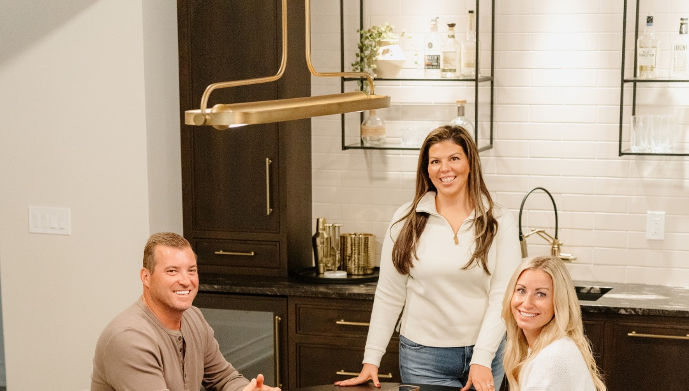
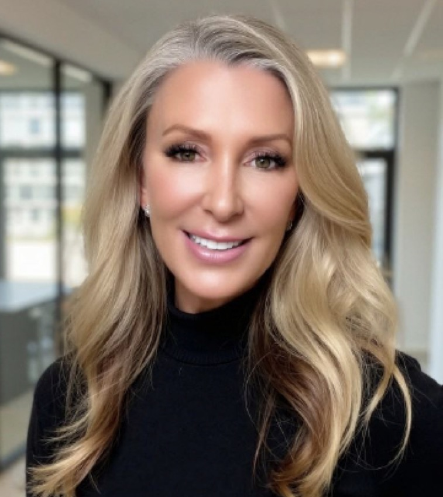

Less friction.
More focus.
Connected tools and workflows help simplify the day-to-day, so you can spend more time with clients and referral partners.
Meet your platformBUILT FOR ORIGINATORS. DESIGNED FOR GROWTH.
You’ve built a successful business.
Let’s make room for what’s next.
The people, technology, and support to help you grow your production—and have more life outside of it.
Let’s talk about your businessA confidential conversation. A possibility worth exploring.

Your relationships. Your ambitions.
A whole team behind them.
The ACM difference starts with the people.
THE ACM ADVANTAGE
Great technology is only part of the equation. Add people who know your business and support that turns good intentions into consistent action. That’s where more capacity begins.
Connected tools and workflows help simplify the day-to-day, so you can spend more time with clients and referral partners.
Meet your platformBusiness Development, marketing, and operations bring real people into the work that keeps your relationships moving.
See your supportCoaching, practical resources, and peer collaboration help you build the habits that support your next level.
Explore your growthTHE MORTGAGE EXPERIENCE PLATFORM
Fewer disconnected tasks. More meaningful conversations. ACM’s Mortgage Experience Platform helps connect the work behind your relationships.
Walk through the platform with HeatherTechnology that supports relationships.
People who help you put it to work.
CRM insights surface timely reasons to reach out.
Birthdays · Loan anniversaries · Client milestonesWorkflows and campaigns support consistent engagement.
Business Development helps with outreach, events, and personalized follow-up.
More of your day spent where you make the difference.
Illustrative workflow, not a product interface.
BUSINESS DEVELOPMENT + DIGITAL MEDIA
You shouldn’t have to become an event planner, a CRM administrator, and a content creator to grow your mortgage business.
ACM’s support brings people into the follow-through, helping you show up consistently for the clients and partners who count on you.
Behind the campaign.
Before the event.
After the closing.
CRM organization, campaign engagement, and relationship follow-up.
Branded content, social media guidance, and digital media support.
Help with invitations, logistics, and the details behind partner events.
Personalized follow-up, client milestones, and meaningful moments after closing.
Support and resources vary by role, team, and market. Explore the right fit for your business with Heather.
REAL ORIGINATORS. REAL EXPERIENCES.
What does the support actually feel like? Start with the people who use it.
Lauren Walton
How ACM Marketing Improves EfficiencyJordan Abdel-Haq
The Impact of CoachingSteve Hendriksen
Why ACM Was the Right MoveShowing all 3 stories
Individual experiences are personal and do not guarantee production, income, or other results.
YOUR BUSINESS. YOUR WAY.
Your next move should respect the business you’ve already built. Explore a structure that makes sense for your goals, your team, and the way you want to lead.
FOR ORIGINATORS
Explore retail opportunities with a platform and support team behind your client and referral relationships.
Talk about your businessFOR BRANCH + TEAM LEADERS
Discuss retail and P&L branch models, team growth, and whether a private-brand opportunity fits your vision.
Compare business modelsBusiness models and private-brand options are subject to availability, qualifications, and individual review.
YOUR GROWTH. THE ACM WAY.
Practical education. Peer perspective. A reason to keep showing up. The ACM Way brings development into the way you build your business.
Talk about your growth goalsThe Top Producer Portal brings Stage Finder, training modules, workbooks, and scripts into one growth resource.
TOP PRODUCER PORTALPower Hours and product education connect you with practical ideas, technology guidance, and perspectives from fellow producers.
POWER HOURS + PRODUCT EDUCATIONThe Power Collective supports connection through relationship-focused events with referral partners and peers.
POWER COLLECTIVEExplore social development, content guidance, and collaborative learning through the Social Media Collective and Creator Cohort.
SOCIAL MEDIA + CREATOR DEVELOPMENTAsk Heather about current programs, access, and the resources available to your role.
THE NEXT CHAPTER STARTS WITH SUPPORT
A successful transition takes more than a welcome email.
Let’s talk through what your move could look like.
Connect with the resources and people who can help you prepare for a confident start.
Bring your business goals into coaching conversations and build an intentional plan.
Learn alongside experienced peers as you find your rhythm and build your next chapter.
An overview of the intended experience. Your transition plan is tailored to your role and branch.
PRODUCTS THAT HELP YOU COMPETE
Relationships open doors. The right product options help you walk through them.
Explore ACM’s current mortgage options and the possibilities for the clients you serve.
Explore ACM productsProduct and state availability vary. All loans are subject to eligibility and underwriting requirements.
A SHARED PERSPECTIVE
ACM was founded by producing Loan Officers. That perspective shapes how we think about relationships, technology, development, and the people behind every loan.
Get to know ACMYOUR NEXT CHAPTER
More production. More capacity. A different business model. Start with what matters to you.
A confidential conversation. On your terms.
SVP, Growth & Market Expansion